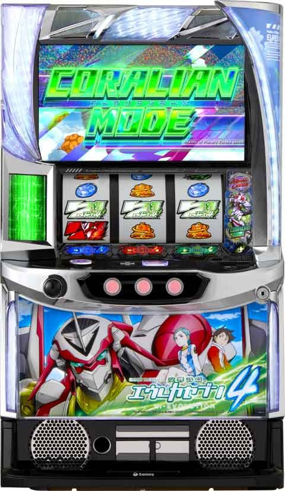

Lエウレカセブン４

天井情報
[天井情報]
※WAVE数はメニュー画面から確認可能。
ゲーム数天井 999G+α AT当選
WAVE数天井 1550WAVE(平均775G) AT+EPボーナス
リセット時 950WAVE(平均475G)
[リセット判別]
Sammyなのでガックンなし？
据置時は当日依存で前兆発生
[有利区間について]
AT中にLFO変化が発生すれば、AT終了後に「EX LFOモード」に突入
差枚数不問で1000枚獲得などでLFO変化のチャンスあり？
差枚+2000枚あたりで有利切れ？
Sammyは差枚プラスで上位AT行くと有利切れする傾向あり。
狙い目
[リセット狙い]
積極派 200WAVE(実ゲーム100G)
慎重派 300WAVE(実ゲーム150G)
[AT間天井狙い]
積極派 880WAVE(実ゲーム440G)
慎重派 1050WAVE(実ゲーム520G)
実ゲーム起点の狙い目 700Gから
[ゾーン&モード狙い]
①実ゲーム404G狙い
※実ゲーム404G、808Gは、CZ(LFOモード)突入のチャンス
※404G跨いでから前兆開始し10Gくらいで突入
※セブンチャンスや液晶G数の前兆が被ると後から出てくる？
※ゴールデンカムイ同様130Gくらいまでの当選だと獲得枚数引継ぎしてる様子。前々回の枚数を引き継いでる履歴なら404G狙い出来そう。約40G以内はEXLFOの引き戻しの可能性高いためその場合は狙えない。
前回AT獲得枚数別狙い目
-500枚 400Gから
500-800枚 380Gから
800-1000枚 300Gから
1000-1500枚 160Gから
1500-1999枚 140Gから
②EX LFO後の404G狙い
※連チャン中の40G以内の引戻し履歴後
※前回420-460G当選後(EX LFO当選後と想定される履歴)
※EX LFO後はモードB以上の確率が大幅アップ
404G狙い 200Gから
モードB以上狙い 500WAVEから
③250WAVE天国狙い
※期待値の数値化が難しいため参考程度
前回AT獲得枚数別狙い目
-150枚(AT駆抜け時) 150WAVEから
150-500枚 200WAVEから
500枚- 230WAVEから
[有利区間切れ狙い]
現状狙えるか不明。差枚+2000枚くらいで有利切れ？
差枚次第で250WAVEの天国狙いする感じになりそう？
やめ時
AT後やめ。
EX LFOモードの場合は引き戻しを見る。
※現状AT終了後の状況不明
その他
モードや示唆等
{kind=link}
参考元
基本情報
- メーカー: サミー
- 機械割: 97.9% 〜 113.1%
- 導入開始日: 2024年05月07日（火）
- ゲーム性概要: 大人気シリーズがついにスマスロで登場。初当りはすべてAT突入となる「直ATタイプ」で、ゲーム数上乗せや擬似ボーナスを絡めて出玉を増やすゲーム性となっている。


打ち方
打ち方・小役
通常時の打ち方（小役狙い）
「最初に狙う絵柄」

左リール上段付近にBARを狙う。
「チェリー停止時」
成立役…弱チェリー／強チェリー

「BAR下段停止時」
成立役…ハズレ／リプレイ／ベル／チャンス目A

「スイカ停止時」
成立役…弱スイカ／強スイカ／チャンス目B

「レア役の停止形」

変則押しはNG
通常時、押し順ナビなし時は左リール第1停止での消化を推奨する。
中段チェリー
中段チェリーの恩恵
| 項目 | 内容 |
|---|---|
| 恩恵 | エピソードボーナスorHI-EVOモード |
解析情報通常時
小役関連
小役確率
| 役 | 確率 |
|---|---|
| リプレイ | 1/7.3 |
| 8枚ベル（6択） | 1/3.7 |
| 12枚ベル（合算） | 1/2.3 |
| 弱チェリー | 1/65.5 |
| 強チェリー | 1/655.4 |
| 弱スイカ | 1/71.2 |
| 強スイカ | 1/993.0 |
| チャンス目A | 1/4369.1 |
| チャンス目B | 1/4369.1 |
| チャンス目C | 1/436.9 |
| 共通1枚ベル | 1/13.2 |
| 共通3枚ベル | 1/27.3 |
| ハズレ（1枚役） | 1/90.3 |
［通常中］セブンチャンス当選率
| 設定 | 弱チェリー | 強レア役 |
|---|---|---|
| 1 | 24.2% | 59.1% |
| 2 | 24.2% | 59.1% |
| 3 | 26.0% | 59.1% |
| 4 | 27.4% | 59.1% |
| 5 | 31.7% | 59.1% |
| 6 | 31.7% | 59.1% |
［高確中］セブンチャンス当選率（全設定共通）
| 役 | 当選率 |
|---|---|
| 弱チェリー | 45.8% |
| 強レア役 | 100% |
［超高確中］セブンチャンス当選率（全設定共通）
| 役 | 当選率 |
|---|---|
| レア役以外 | 6.3% |
| 弱チェリー | 67.5% |
| 弱スイカ | 67.0% |
| 強レア役 | 100% |
内部状態関連
内部状態概要
通常時の内部状態でセブンチャンスの当選率が変化。おもな高確移行契機はスイカで、一度昇格すればセブンチャンスに当選するまで転落しない。
AT終了時は高確以上からスタート、設定変更後は超高確からスタートする可能性がある。
初期内部状態振り分け
| 内部状態 | 設定変更後 | AT終了後 |
|---|---|---|
| 通常 | 39.8% | ー |
| 高確 | 50.0% | 79.7% |
| 超高確 | 10.2% | 20.3% |
モード
モードごとの最大天井
| モード | 天井 | 平均到達ゲーム数 |
|---|---|---|
| 通常A | 1550WAVE | 775G |
| 通常B | 950WAVE | 475G |
| 通常C | 550WAVE | 275G |
| 天国 | 250WAVE | 125G |
250WAVE以内のAT期待度は40%以上。規定のWAVE到達時は前兆を経由してATへ突入、通常Aの天井（1550WAVE）到達時はエピソードボーナスも確定する。
WAVEごとのAT当選期待度
| WAVE | 平均ゲーム数 | 期待度 |
|---|---|---|
| 100 | 50G | 中 |
| 250 | 125G | 高 |
| 350 | 175G | 低 |
| 450 | 225G | 低 |
| 550 | 275G | 高 |
| 650 | 325G | 低 |
| 750 | 375G | 低 |
| 850 | 425G | 低 |
| 950 | 475G | 高 |
| 1050 | 525G | 低 |
| 1150 | 575G | 低 |
| 1250 | 625G | 中 |
| 1350 | 675G | 低 |
| 1450 | 725G | 高 |
| 1550 | 775G | 最大天井 |
設定変更時やATを駆け抜けた場合、250WAVE以内の当選率がアップする。
「実ゲーム数のLFOモード抽選もアリ！」 404Gや808G到達時はLFOモード突入のチャンス。こちらはWAVEではなく、実ゲーム数での抽選になる。
250WAVE以内のAT当選期待度
| 設定 | 期待度 |
|---|---|
| 1 | 40.5% |
| 2 | 41.7% |
| 3 | 42.5% |
| 4 | 46.5% |
| 5 | 49.9% |
| 6 | 50.5% |
※全モードをトータルした期待度
WAVEごとのAT当選期待度
| WAVE | 通常A | 通常B | 通常C | 天国 |
|---|---|---|---|---|
| 100 | ◯ | ▲ | ▲ | ◯ |
| 250 | ◯ | ◯ | ◯ | 天井 |
| 350 | 低 | 低 | 低 | |
| 450 | 低 | 低 | 低 | |
| 550 | ◯ | ◯ | 天井 | |
| 650 | 低 | 低 | ||
| 750 | 低 | 低 | ||
| 850 | 低 | 低 | ||
| 950 | ◯ | 天井 | ||
| 1050 | 低 | |||
| 1150 | 低 | |||
| 1250 | ◯ | |||
| 1350 | 低 | |||
| 1450 | ◯ | |||
| 1550 | 天井 |
※期待度…▲＜◯
404モード
通常モード（通常A〜天国）とは別軸で、404G到達時にEX LFOモードへ必ず突入する “404モード” が存在する。
404モード性能
| 項目 | 内容 |
|---|---|
| 移行契機 | AT終了時の一部 |
| 移行に期待できる パターン・期待度 | EX LFOモード経由のAT終了後： 20%以上 （※） |
| 移行に期待できる パターン・期待度 | 1000枚以上獲得後のAT終了後： 50%以上 |
| 移行時の恩恵 | 404G到達時に必ずEX LFOモードに突入 |
| その他 | 404モード滞在時の機械割は106%オーバー |
※404モードの当否不問で、EX LFOモード経由後は通常B以上移行率が大幅アップ
規定WAVE抽選
規定WAVE概要

液晶右下に表示されているWAVEは1Gにつき1ずつ加算されていき、規定のWAVE数に到達するとATへ突入。セブンチャンスでいっきにWAVEを加算することもできる。 1550WAVEが最大天井で、滞在モードごとに期待できるゾーンや天井が変化する。
LFOモード
LFOモード概要

ゲーム数消化で突入するATのチャンスゾーン。敵を撃破すればAT確定、残りゲーム数がある場合は、バースト上乗せでATの初期ゲーム数上乗せやボーナス抽選もおこなわれる。AT当選時の一部でHI-EVOモードに突入することも!?
LFOモード性能
| 項目 | 内容 |
|---|---|
| 突入契機 | ゲーム数消化時の抽選 （404G、808Gがチャンス） |
| 継続ゲーム数 | 5G |
| 消化中の抽選 | 敵を撃破できればAT |
| AT期待度 | 約50.4% |
| 撃破後 | LFOモードの残りゲーム数分だけ バースト上乗せが発生しAT初期ゲーム数を上乗せ |
| その他 | ボーナスやHI-EVOモード獲得の可能性あり |
「バースト上乗せ」


LFOモードの残りゲーム数があった場合に毎ゲーム（残り2Gなら2回以上）発生するので、早く撃破するほど多くのゲーム数を上乗せできる。ボーナス当選の可能性もアリ！
成立役別・AT当選率
| 役 | 当選率 |
|---|---|
| リプレイ | 33.6% |
| ベル | 35.9% |
| 弱レア役 | 75.0% |
| 強レア役 | 100% |
セブンチャンス
セブンチャンス概要

ハズレとベル揃いでレベルを上げるほど、アイコン（PLAY FORWARD）の色がアップ。リプレイ成立時はPLAY FORWARDの色に応じた報酬（おもにWAVE数）を獲得できる。 レア役成立時はPLAY FORWARDの色を参照しつつ、リプレイ時よりも上位の報酬を獲得して一旦セブンチャンスは終了するが、前兆を経由してセブンチャンスへ再突入する。
セブンチャンス性能
| 項目 | 内容 |
|---|---|
| 突入契機 | レア役成立時の抽選 |
| 突入確率 | 約1/72 |
| ベル揃い確率 | 1/5.5 |
| 継続ゲーム数 | 不定（保証ゲーム消化後のリプレイ成立まで） |
| 消化中の抽選 | リプレイとレア役以外の全役でレベルアップを抽選 最終的なレベルでWAVE数を加算 |
| 消化中の抽選 | レア役はWAVE加算後にセブンチャンス再突入 |
| その他 | 中段チェリーはアネモネ（特化ボーナス）確定 |
セブンチャンス確率
| 設定 | 確率 |
|---|---|
| 1 | 1/72.1 |
| 2 | 1/70.9 |
| 3 | 1/67.7 |
| 4 | 1/66.8 |
| 5 | 1/63.9 |
| 6 | 1/63.3 |
「レベルが上がるほどチャンス」

レベルは液晶中央に表示され、ハズレやベルで昇格を抽選。上位のレベルだとレア役成立時にATに直行したり、ボーナスを獲得できるケースも存在する。 中段チェリー出現時はレベル不問でアネモネ へ突入！
「4択ベルはチャンス」

ベル揃いはレベルアップ濃厚。4択ベルは押し順正解で大幅なレベルアップに期待できる。
「WAVEの加算」

セブンチャンス終了時（リプレイ・レア役成立時）に、PLAY FORWARDの色を参照してWAVEを加算する。
「WAVEのヒキ損はナシ」 超過したWAVEはエアリアルチャンスの抽選に使用されるためヒキ損はナシ。レア役契機で規定WAVEを超えた場合、再突入する予定のセブンチャンスはAT終了後までストックされる。
レベルアップ抽選
中段チェリーは現在のレベル不問でアネモネ当選確定。基本はレベル1からスタートするが、いきなりレベル12からスタートすることもある。
成立役ごとの抽選内容・レベルアップ率
| 役 | 内容 |
|---|---|
| ハズレ | 約25%でレベルアップ |
| ベル揃い | 1レベル以上アップ濃厚 |
| 4択押し順不正解 | 約25%でレベルアップ |
| 4択押し順正解 | 5レベルアップ |
| リプレイ（保証中） | 約25%でレベルアップ |
| リプレイ（保証後） | 報酬を獲得して終了 |
| 弱レア役 | レベルを＋5して終了（セブンチャンス再突入） |
| 強レア役 | レベルを＋10して終了（セブンチャンス再突入） |
| 中段チェリー | レベル＋35（アネモネ確定） |
4択ナビは押し順不正解でもハズレの抽選値でレベルアップを抽選。保証内（開始から5G目まで）のリプレイも同様にレベルアップが抽選される。
レベルごとの最低報酬
| Lv.（報酬の色） | 最低報酬 |
|---|---|
| 1～3（白） | ＋30WAVE以上 |
| 4～7（青） | ＋40WAVE以上 |
| 8～11（黄） | ＋50WAVE以上 |
| 12～15（緑） | ＋100WAVE以上 |
| 16～20（赤） | ＋200WAVE以上 |
| 21～27（虹） | AT |
| 28～34（虹） | エピソードボーナス |
| 35以上（虹） | アネモネ |
※該当するレベルでリプレイを引いたときの最低獲得報酬
レベル・役ごとの獲得報酬一覧
| Lv. | リプレイ | 弱レア役 | 強レア役 | 中段チェリー |
|---|---|---|---|---|
| 1 | 白PLF | 青PLF | 黄PLF | アネモネ （AT＋70G） |
| 2 | 白PLF | 青PLF | 緑PLF | アネモネ （AT＋75G） |
| 3 | 白PLF | 黄PLF | 緑PLF | アネモネ （AT＋80G） |
| 4 | 青PLF | 黄PLF | 緑PLF | アネモネ （AT＋85G） |
| 5 | 青PLF | 黄PLF | 緑PLF | アネモネ （AT＋90G） |
| 6 | 青PLF | 黄PLF | 赤PLF | アネモネ （AT＋95G） |
| 7 | 青PLF | 緑PLF | 赤PLF | アネモネ （AT＋100G） |
| 8 | 黄PLF | 緑PLF | 赤PLF | アネモネ （AT＋105G） |
| 9 | 黄PLF | 緑PLF | 赤PLF | アネモネ （AT＋110G） |
| 10 | 黄PLF | 緑PLF | 赤PLF | アネモネ （AT＋115G） |
| 11 | 黄PLF | 赤PLF | AT | アネモネ （AT＋120G） |
| 12 | 緑PLF | 赤PLF | AT＋5G | アネモネ （AT＋125G） |
| 13 | 緑PLF | 赤PLF | AT＋10G | アネモネ （AT＋130G） |
| 14 | 緑PLF | 赤PLF | AT＋15G | アネモネ （AT＋135G） |
| 15 | 緑PLF | 赤PLF | AT＋20G | アネモネ （AT＋140G） |
| 16 | 赤PLF | AT | AT＋25G | アネモネ （AT＋145G） |
| 17 | 赤PLF | AT＋5G | AT＋30G | アネモネ （AT＋150G） |
| 18 | 赤PLF | AT＋10G | EP （AT＋35G） | アネモネ （AT＋155G） |
| 19 | 赤PLF | AT＋15G | EP （AT＋40G） | アネモネ （AT＋160G） |
| 20 | 赤PLF | AT＋20G | EP （AT＋45G） | アネモネ （AT＋165G） |
| 21 | AT | AT＋25G | EP （AT＋50G） | アネモネ （AT＋170G） |
| 22 | AT＋5G | AT＋30G | EP （AT＋55G） | アネモネ （AT＋175G） |
| 23 | AT＋10G | EP （AT＋35G） | EP （AT＋60G） | アネモネ （AT＋180G） |
| 24 | AT＋15G | EP （AT＋40G） | EP （AT＋65G） | アネモネ （AT＋185G） |
| 25 | AT＋20G | EP （AT＋45G） | アネモネ （AT＋70G） | アネモネ （AT＋190G） |
| 26 | AT＋25G | EP （AT＋50G） | アネモネ （AT＋75G） | アネモネ （AT＋195G） |
| 27 | AT＋30G | EP （AT＋55G） | アネモネ （AT＋80G） | アネモネ （AT＋200G） |
| 28 | EP （AT＋35G） | EP （AT＋60G） | アネモネ （AT＋85G） | アネモネ （AT＋205G） |
| 29 | EP （AT＋40G） | EP （AT＋65G） | アネモネ （AT＋90G） | アネモネ （AT＋210G） |
| 30 | EP （AT＋45G） | アネモネ （AT＋70G） | アネモネ （AT＋95G） | アネモネ （AT＋215G） |
| 31 | EP （AT＋50G） | アネモネ （AT＋75G） | アネモネ （AT＋100G） | アネモネ （AT＋220G） |
| 32 | EP （AT＋55G） | アネモネ （AT＋80G） | アネモネ （AT＋105G） | アネモネ （AT＋225G） |
| 33 | EP （AT＋60G） | アネモネ （AT＋85G） | アネモネ （AT＋110G） | アネモネ （AT＋230G） |
| 34 | EP （AT＋65G） | アネモネ （AT＋90G） | アネモネ （AT＋115G） | アネモネ （AT＋235G） |
| 35 | アネモネ （AT＋70G） | アネモネ （AT＋95G） | アネモネ （AT＋120G） | アネモネ （AT＋240G） |
| 36～ | 1レベルアップごとにアネモネ＋ATゲーム数が＋5G |
※PLF…PLAY FORWARD ※EP…エピソードボーナス
直撃抽選
レア役によるAT直撃確率
レア役成立時の一部で、AT直撃の可能性あり！
演出動画
星に願いを
恩恵はAT300G上乗せかつ、AT終了時の約90%で50Gが再セット。期待枚数約3000枚を誇る強力フラグだ。
フリーズ
星に願いを

フリーズはシリーズおなじみの星に願いをが発生。AT300G上乗せが確定する。
星に願いを性能
| 項目 | 内容 |
|---|---|
| 発生条件 | 調査中 |
| 恩恵 | AT＋300G |
| 恩恵 | AT終了時の約90%で50Gが再セット |
| 期待枚数 | 約3000枚 |
解析情報ボーナス時
コーラリアンモード（AT）
コーラリアンモード（AT）概要

ゲーム数管理型のAT。レア役成立時の直乗せやエアリアルチャンスでゲーム数を上乗せしていくゲーム性だ。
AT性能
| 項目 | 内容 |
|---|---|
| 初期ゲーム数 | 50G＋α |
| 1Gあたりの純増 | 約2.1枚 |
| 消化中の抽選 | 内部状態昇格、ゲーム数直乗せ、ミッション エアリアルチャンス、EXコーラリアンモード |
| その他 | AT終了後にEX LFOモード突入で引き戻し確定 |
EX コーラリアンモード

AT中の2択（超ねだるな勝ち取れ）正解で突入するエアリアルチャンスの超高確率状態。10G間、ATのゲーム数減算がストップして、毎ゲーム約1/3.2でエアリアルチャンスをストックする。
エアリアルチャンスストック当選率
| 役 | 当選率 |
|---|---|
| ベル | 約40% |
| 弱レア役 | 約60% |
| 強レア役 | 100% |
| 1Gあたりのストック確率 | 約1/3.2 |
「超ねだるな勝ち取れ」

2択正解でEXコーラリアンモードへ！
ミッション

AT中のハズレの規定回数到達で突入する自力ミッションで、5G以内に指定された小役を引けば成功となりエアリアルチャンスへ突入（レア役もチャンス）。ミッション中はATゲーム数の減算がストップする。
ミッション成功期待度
| ミッション | 期待度 |
|---|---|
| リプレイを引け | 50%以上 |
| ベルを引け | 90%以上 |
レア役成立時・ミッション成功率
| 役 | 成功率 |
|---|---|
| 弱チェリー | 50.0% |
| スイカ | 50.0% |
| 強レア役 | 100% |
AT中の内部状態
AT中の内部状態は低確・通常・高確の3種類で、おもに弱スイカやナビあり12枚ベルを契機に昇格。ステージ的には遠距離＜中距離＜近距離と近づくほど上位の状態に期待できる。 この3種類とは別に、2択の押し順当て（超ねだるな勝ち取れ）正解で移行する超高確（EXコーラリアンモード）も存在する。
内部状態（ステージ）昇格率
| 役 | 遠距離 →中距離 | 遠距離 →近距離 | 中距離 →近距離 |
|---|---|---|---|
| 弱スイカ | 31.8% | 1.4% | 34.7% |
| ナビあり12枚ベル | 32.7% | 0.9% | 33.6% |
ゲーム数上乗せ当選期待度序列
| 役 | 序列 |
|---|---|
| 弱スイカ | 低 |
| 弱チェリー | ↓ |
| 強スイカ | ↓ |
| 強チェリー | 高 |
上乗せゲーム数期待度序列
| 役 | 序列 |
|---|---|
| 弱チェリー | 低 |
| 強チェリー | ↓ |
| （弱・強）スイカ | 高 |
エアリアルチャンス当選率
| 役 | 遠距離 | 中距離 | 近距離 |
|---|---|---|---|
| 下記以外のベル | ー | ー | 4.7% |
| ナビあり12枚ベル | ー | ー | 20.3% |
| 弱チェリー | 2.8% | 10.2% | 50.0% |
| 弱スイカ | ー | ー | 50.0% |
| 強チェリー | 58.9% | 100% | 100% |
| 強スイカ | ー | ー | 100% |
| チャンス目 | 35.9% | 50.0% | 100% |
ボーナス当選率
| 役 | 当選率 |
|---|---|
| 弱スイカ | 0.4% |
| 強スイカ | 27.9% |
ゲーム数上乗せ当選率
| 上乗せ | 弱チェリー | 弱スイカ | 強チェリー | 強スイカ |
|---|---|---|---|---|
| 非当選 | 89.8% | 99.3% | ー | 62.5% |
| ＋10G | 8.6% | ー | ー | ー |
| ＋20G | ー | ー | 88.7% | ー |
| ＋30G | 1.4% | 0.2% | 8.7% | ー |
| ＋50G | 0.2% | 0.2% | 2.3% | 35.8% |
| ＋100G | ー | 0.2% | 0.2% | 1.4% |
| ＋200G | ー | 0.2% | 0.2% | 0.3% |
準備中のストック当選率

AT準備中はレア役でエアリアルチャンスのストックを抽選。液晶に！が表示されてのレア役ならストック獲得濃厚だ。
［レア役成立時］ストック獲得時の！マーク出現割合
| ！マーク | 割合 |
|---|---|
| 出現なし | 約80% |
| 出現あり | 約20% |
AT準備中・エアリアルチャンスストック当選率
| 役 | 当選率 |
|---|---|
| 弱レア役 | 1.6% |
| 強レア役 | 12.5% |
エアリアルチャンス
エアリアルチャンス概要

リプレイ以外の小役成立でコーラリアンを撃破していき、100体撃破ごとにアイコンを獲得。終了時に獲得したアイコンに応じた報酬を獲得できる。初回は50体撃破した状態からスタートするので、50体撃破すればアイコンを獲得、100体未満で終了した場合は撃破数が次回のエアリアルチャンスに持ち越される。
エアリアルチャンス性能
| 項目 | 内容 |
|---|---|
| 突入契機 | AT中のレア役、ボーナス中の抽選 |
| 確率 | 1/74.8（設定1） |
| 継続ゲーム数 | 最低5G（リプレイで終了のピンチ） |
| 2択ナビ発生確率 | 1/2.3（2択正解でベル揃い） |
| 消化中の抽選 | リプレイ以外の小役でコーラリアンを撃破 100体撃破するたびにアイコンを獲得 |
| 消化中の抽選 | 終了後にアイコンに応じた上乗せを獲得 |
| その他 | 上乗せ時にライドオンフリーズ発生で 追加報酬を獲得可能 |
「アイコン獲得」

アイコンの色は緑＜赤＜虹の3種類。もちろん、上位の色ほど大量上乗せやボーナスの期待度が高い。アイコン獲得のタイミングで下パネルが特殊点滅すると、エアリアルオーバー突入濃厚だ（突入時の約25%で発生）。
「報酬ジャッジ」

貯めたアイコンを一つずつ消化し、報酬を獲得。ライドオンフリーズが発生すれば追加報酬を獲得できる。
［ライドオンフリーズ］


報酬獲得後のレバーON時に、ねだるなのあおりが入るとライドオンフリーズのチャンス。最終的にリールが逆回転すればライドオンフリーズが発生する。 0G連タイプの上乗せで、リールの逆回転が続く限り上乗せも継続。ボーナス獲得時のライドオンフリーズであれば、ボーナスを複数ストックできる。 「レバーで勝ち取れ!!」の帯の色は青よりも赤がアツい！
「サイクル数で期待度が変化!?」

サブ液晶に撃破数が表示されていて、100体撃破ごとにサイクルが一つずつ進んでいく。3・5サイクル目は赤文字となりチャンス、7サイクル到達時はエアリアルオーバーに期待できる。
エアリアルオーバー

エアリアルチャンスでアイコンを獲得（100体撃破）した時の一部で突入する上位の状態で、5G＋α間、コーラリアンの撃破率が大幅にアップする。
エアリアルオーバー性能
| 項目 | 内容 |
|---|---|
| 突入契機 | エアリアルチャンスで100体撃破時の一部 3・5回目はチャンス、7回目は突入濃厚 |
| 継続ゲーム数 | 5G＋α（リプレイで転落のピンチ） |
| 特徴 | 各役の撃破数がエアリアルチャンスの約2倍にアップ |
| 終了後 | ライドオンブーストへ |
成立役別の撃破数
| 役 | 撃破数 |
|---|---|
| ハズレ | 少 |
| ベル | 20体以上 |
| 弱レア役 | 30体以上 |
| 強レア役・7揃い | 100体以上 |
7を狙え発生時の7揃い期待度は99.8%と超激アツ!!
保証（5G）消化後の終了率
| 項目 | 終了率 |
|---|---|
| リプレイ | 90.6% |
| トータル終了確率 | 1/8.1 （保証終了後の1Gあたり終了確率） |
ライドオンブースト（報酬ジャッジ）

アイコンの色を参照して報酬を抽選。消化中のレア役では追加でアイコンの獲得抽選もおこなわれる。報酬獲得後にリールロックが発生し、最終的に逆回転すればライドオンフリーズで追加報酬を獲得する。
アイコン色別の報酬
| 色 | 報酬 |
|---|---|
| 緑 | ゲーム数上乗せorボーナス |
| 赤 | ＋50G以上orボーナス |
| 虹 | ボーナス＋ライドオンフリーズ |
レア役成立時の恩恵
| タイミング | 報酬 |
|---|---|
| ライドオンブースト中 | アイコンの獲得抽選 |
| ライドオンブースト終了画面 | 弱レア役→約50%でアイコン獲得 |
| ライドオンブースト終了画面 | 強レア役→アイコン獲得濃厚 |
リールロック・ライドオンフリーズ発生期待度
| 項目 | 抽選値 |
|---|---|
| リールロック発生期待度 | 約35%（アイコン1個あたり） |
| リールロック発生時の ライドオンフリーズ期待度 | 約26% |
| リールロック2段階到達時の ライドオンフリーズ期待度 | 80%以上 |
※リールロック1段階目…「ねだるな」、リールロック2段階目…「勝ち取れ」
アイコンごとの報酬振り分け
| 報酬 | 緑 | 赤 | 虹 |
|---|---|---|---|
| ＋20G | 64.99% | ー | ー |
| ＋30G | 9.85% | ー | ー |
| ＋50G | 1.29% | 5.12% | ー |
| ボーナス | 23.87% | 94.88% | 100% |
BIGボーナス
BIGボーナス概要

白7揃いがBIGボーナス。25G固定で、レア役はATゲーム数の上乗せを抽選、狙えカットイン発生時に7が揃えばエアリアルチャンスのストックを獲得する。
BIGボーナス性能
| 項目 | 内容 |
|---|---|
| 突入契機 | 初当り時の一部、エアリアルチャンスの報酬 |
| 確率 | 1/104.8（設定1） |
| 継続ゲーム数 | 25G |
| 1Gあたりの純増 | 約4.5枚 |
| 消化中の抽選 | レア役でATゲーム数上乗せ抽選 |
| 消化中の抽選 | 7揃いはエアリアルチャンスをストック |
ゲーム数上乗せ当選率
| 役 | 当選率 |
|---|---|
| 弱レア役 | 25.0% |
| 強レア役 | 100% |
※エピソードボーナス中も抽選値は共通
ボーナス確定画面のストック当選率

ボーナス確定画面のレア役では、エアリアルチャンスのストックを抽選。レア役成立時は液晶に！が必ず出現するが、出現タイミングがレバーON時ではなくリール回転開始時ならストック濃厚だ。
ストック獲得時の！マーク出現タイミング割合
| タイミング | 割合 |
|---|---|
| レバーON時 | 約75% |
| リール回転開始時 | 約25% |
エピソードボーナス
エピソードボーナス概要

赤7が揃えばエピソードボーナス。当選した時点でエアリアルチャンスのストック獲得確定で、レア役ではATゲーム数上乗せを抽選。上乗せ当選時は後乗せに回るため、ボーナス中は告知されない。7を狙えは発生した時点で7揃い（エアリアルチャンス）が確定する。
エピソードボーナス性能
| 項目 | 内容 |
|---|---|
| 突入契機 | 初当り時の一部、エアリアルチャンスの報酬 |
| 継続ゲーム数 | 25G |
| 1Gあたりの純増 | 約4.5枚 |
| 消化中の抽選 | 突入した時点でエアリアルチャンスをストック |
| 消化中の抽選 | レア役でATゲーム数上乗せ抽選 |
| 消化中の抽選 | 7揃いはエアリアルチャンスをストック |
アネモネ（特化ボーナス）
アネモネ概要

上乗せ特化型の強力なボーナス。ベルとレア役でATゲーム数上乗せを抽選、7揃いはエアリアルチャンスをストックする。
アネモネ性能
| 項目 | 内容 |
|---|---|
| 突入契機 | ボーナス当選時の一部 セブンチャンス中の中段チェリー |
| 継続ゲーム数 | 25G |
| 1Gあたりの純増 | 約4.5枚 |
| 消化中の抽選 | ベル、レア役、7揃いでゲーム数を上乗せ |
| 平均上乗せ | 保証は100G、平均310G（保証込み） |
［狙えカットイン］

アネモネ（青背景）＜アネモネ（赤背景）＜ドミニクの順に7揃いのチャンス！
上乗せ当選率
| 役 | 当選率 |
|---|---|
| 押し順ベル | 50.0% |
| レア役 | 100% |
HI-EVOモード
HI-EVOモード概要

（EX）LFOモード成功時の一部で突入するATゲーム数上乗せ特化ゾーン。
HI-EVOモード性能
| 項目 | 内容 |
|---|---|
| 突入契機 | （EX）LFOモード成功時の一部、通常時の中段チェリー |
| 継続ゲーム数 | 10G＋α |
| 消化中の抽選 | 毎ゲーム、高確率でATゲーム数を上乗せ |
| 消化中の抽選 | 7揃い後は約50%でフリーズ発生（3桁上乗せ濃厚） |
| 平均上乗せ | 約440G |
| 期待枚数 | 約2000枚以上 |
「7揃い後はフリーズに期待！」

7揃いの約50%でフリーズが発生。100G以上の上乗せ濃厚だ。
消化中の抽選
ベルで上乗せの大チャンス、レア役は上乗せ濃厚。7揃いは上乗せかつ、約50%でサマーオブラブフリーズ（3桁上乗せ）が発生する。
上乗せ当選率
| 役 | 成功率 |
|---|---|
| ベル | 約60% |
| レア役 | 100% |
サマーオブラブフリーズ性能
| 項目 | 内容 |
|---|---|
| 発生契機 | HI-EVOモード中7揃い時の約50% |
| 上乗せゲーム数 | 100or200or300G |
転落（終了）率
| 役 | 転落率 |
|---|---|
| レア役以外 | 約33% |
EX LFOモード
EX LFOモード概要

AT終了時に有利区間が切れると、EX LFOモードへ突入。突入した時点でAT引き戻しは確定していて、32G＋α消化までに敵を撃破できれば追加の報酬を獲得できる。
EX LFOモード性能
| 項目 | 内容 |
|---|---|
| 突入契機 | AT終了時の一部 |
| 継続ゲーム数 | 32G＋α |
| 消化中の抽選 | まずは敵の発見を抽選 |
| 消化中の抽選 | 撃破成功でバースト上乗せorHI-EVOモード |
| バースト上乗せループ率 | 0.4%or50%or75% |
| その他 | ゲーム数消化までに撃破できなくてもATは確定 |
「まずは敵発見を抽選」

成立役を参照して、敵の発見を抽選。
「敵撃破で報酬ゲット！」

敵発見後、5G以内に撃破できれば報酬（バースト上乗せ or HI-EVOモード）を獲得した上でATへ突入する。
「バースト上乗せ」

平均上乗せは60G。ボーナスを獲得できる可能性もあり、バースト上乗せではなく、HI-EVOモードへ突入することも！
EX LFOモードの敵発見率
| 役 | 発見率 |
|---|---|
| リプレイ | チャンス |
| 弱レア役 | 約66% |
| 強レア役 | 100%（HI-EVOモード濃厚） |
1Gあたりの勝利期待度は約40%だ。
レア役で勝利時の報酬振り分け
| 役 | バースト上乗せ | HI-EVOモード |
|---|---|---|
| 弱レア役 | 75.0% | 25.0% |
| 強レア役 | ー | 100% |
ツラヌキ・有利区間
有利区間終了抽選
当該ATで100枚を獲得するごとに有利区間の終了を抽選していて、当選時はAT終了時にEX LFOモードへ突入。当選時の一部で出撃LFOが変化する。 有利区間内の差枚数ではなく、AT1回の獲得枚数で抽選されるため、1回のATで獲得する枚数が多いほど有利区間が切れやすい。
エンディング


エンディング到達後は必ず有利区間が切れるため、 EX LFOモードを経由してATを引き戻す 。本機は枚数以外にも有利区間を切る抽選をおこなっているため、エンディング非到達でもEX LFOモードへ突入する可能性がある。
演出情報
通常時
ステージ・示唆内容
| ステージ | 示唆 |
|---|---|
| 食堂 | 示唆ナシ |
| 月光号 | 示唆ナシ |
| トレゾア | 示唆ナシ |
| 街 | 示唆ナシ |
| ブリッジ | 高確or前兆示唆 |
AT終了時は基本的にブリッジからスタート。その他のステージからスタートした場合はセブンチャンスのストックあり or 超高確滞在濃厚だ。
［食堂］

［月光号］

［トレゾア］

［街］

［ブリッジ］

高確示唆・濃厚パターン
| 演出 | 濃厚パターン |
|---|---|
| 会話演出 | リプレイ成立 |
| マシュー演出 | ベルorレア役以外成立 |
| ギジェット妄想演出 | ベルorレア役以外成立 |
| ケンゴウ演出 | リプレイで高確濃厚（レア役以外で高確示唆） |
| マニキュア演出 | 発生した時点 |
| ドミニク演出 | リプレイorレア役以外成立 |
| ゴンジイお茶演出 | リプレイorレア役以外成立 |
※すべて非前兆中に発生した場合
前兆（前兆ステージ移行）発生タイミング別・示唆内容
| パターン | 示唆 |
|---|---|
| 100WAVEで 前兆非発生 | モードC以上の期待大かつ、天国の期待度アップ |
| 100WAVEで 前兆非発生 | 前兆発生時のモード比率は 天国：通常C：その他＝49.9：50.0：0.1 （トータル発生率は約8%） |
| 350WAVEで 前兆発生 | 通常B以上濃厚かつ、通常Cの期待度アップ |
| 350WAVEで 前兆発生 | 前兆発生時のモード比率は通常B：通常C＝25：75 |
| 550WAVEで 前兆非発生 | 通常B濃厚 |
| 750WAVEで 前兆発生 | 通常B濃厚 |
通常時・演出法則
| 演出 | 示唆 |
|---|---|
| カットイン | レア役濃厚 前兆ステージでの発生は大チャンス |
| タイトルコール カットイン | 発生した時点で大チャンス レア役成立ゲームや発展ゲームで発生しやすい |
| 次回予告 | エピソードボーナス期待度大幅アップ |
| 連続演出中の PUSHボタン | 当落判定ゲームで出現すると期待度大幅アップ |
| 擬似連 | おもにAT前兆中の発展あおりとして発生 |
| 名場面擬似連 | 期待度大幅アップかつ、エピソードボーナスに期待 |
| アネモネジャム 演出 | 強チェリー対応、AT当選期待度アップ |
| アネモネジャム 演出 | 強チェリー否定でAT濃厚 |
［カットイン］

［タイトルコールカットイン］

［次回予告］

［連続演出中のPUSHボタン］

PUSHボタン・違和感発生時の法則
| 項目 | 法則 |
|---|---|
| 違和感パターン | デカPUSH、ボタンの光り方がいつもと違う |
| 発生時の恩恵 | 勝利濃厚かつ、エピソードボーナス期待度アップ |
| 発生時の恩恵 | デカPUSHと光り方の違いが複合すると エピソードボーナス濃厚 |
［擬似連］

［名場面擬似連］

［アネモネジャム演出］

前兆
前兆ステージの期待度序列
| ステージ | 序列 |
|---|---|
| カタパルト | 低 |
| ビークル | ↓ |
| 飛行形態 | 高 |
| 303モード | 本前兆濃厚 AT終了後、実ゲーム数150G＋前兆以内での 前兆ステージ移行時に突入の可能性あり |
| スピアヘッドモード | 本前兆濃厚 AT終了後、実ゲーム数150G＋前兆以内での 前兆ステージ移行時に突入の可能性あり |
| the ENDモード | 本前兆濃厚 AT終了後、実ゲーム数150G＋前兆以内での 前兆ステージ移行時に突入の可能性あり |
303モード、スピアヘッドモード、the ENDモードは前回のATで最終的に出撃していたLFOが303・スピアヘッド・the ENDのいずれか、またはAT終了後150G＋α以内にのみ突入する可能性がある前兆ステージ。AT当選時は前兆ステージに登場した機体が初期の機体となる。
セブンチャンスでゾーン（100WAVE、250WAVE、350WAVE…）をまたいだ場合、基本的に上記の前兆ステージへ移行。ゾーンをまたいだのに前兆ステージへ移行せず、通常ステージのままで前兆演出が発生すればチャンスアップだ。
［カタパルト］

［ビークル］

［飛行形態］

［303モード］

［スピアヘッドモード］

［the ENDモード］

ミッション系演出期待度
| ミッション | 期待度 | |
|---|---|---|
| スカイフィッシュ | セブンチャンス 対応 | ★×2 |
| トラパー | セブンチャンス 対応 | ★×2 |
| デリバリー | セブンチャンス 対応 | ★×3 |
| 逃走 | セブンチャンス 対応 | ★×4 |
| 弾道飛行 | セブンチャンス 対応 | ★×4 |
| フットサル | セブンチャンス 対応 | ★×5 |
| レスキュー | AT対応 | ★×4 |
| 迎撃 | AT対応 | ★×5 |
ミッション系演出法則
| ミッション | 法則 |
|---|---|
| スカイフィッシュ | 復活勝利でLFOモード以上濃厚 前兆ステージ経由での発展はAT濃厚 |
| トラパー | 復活勝利でLFOモード以上濃厚 前兆ステージ経由での発展はAT濃厚 |
| デリバリー | 復活勝利でLFOモード以上濃厚 前兆ステージ経由での発展はAT濃厚 |
| 逃走 | 復活勝利でLFOモード以上濃厚 前兆ステージ経由での発展はAT濃厚 |
| 弾道飛行 | 復活勝利でLFOモード以上濃厚 前兆ステージ経由での発展はAT濃厚 |
| フットサル | 成功濃厚かつLFOモード以上濃厚 復活勝利はAT以上濃厚 |
| レスキュー | 期待度90%超、EP期待度アップ 特殊ルート発生時はEP濃厚 |
| 迎撃 | 敗北でもATには突入、勝利でEP濃厚 |
※EP…エピソードボーナス
バトル系演出期待度
| 演出 | 序列 | 備考 |
|---|---|---|
| ニルヴァーシュ VS KLF MS10 | ★×1 | ー |
| ニルヴァーシュ VS スピアヘッド | ★×2 | ー |
| ニルヴァーシュ VS the END | ★×3 | ー |
| ニルヴァーシュ VS VC10 | ★×4 | ー |
| 909 VS the END | ★×4 | EP期待度アップ |
| 303 VS 銀河号 | ★×4 | EPの大チャンス |
| 303 VS KLF MS10 | ★×4 | ー |
| 303 VS ジャベリンヘッド | ★×4 | ー |
| スピアヘッド VS 盗賊団 | ★×4 | ー |
| スピアヘッド VS ジャベリンヘッド | ★×4 | ー |
| the END VS 盗賊団 | ★×4 | ー |
※EP…エピソードボーナス
バトル系演出法則
| 演出 | 法則 |
|---|---|
| ニルヴァーシュ VS KLF MS10 | ー |
| ニルヴァーシュ VS スピアヘッド | ー |
| ニルヴァーシュ VS the END | ニルヴァーシュ先制で期待度50%超 |
| ニルヴァーシュ VS VC10 | 期待度90%超 |
| 909 VS the END | 期待度90%超 復活勝利でEP期待度アップ |
| 303 VS 銀河号 | EPの大チャンス |
| 303 VS KLF MS10 | 該当するLFOの 前兆ステージ経由で発展 |
| 303 VS ジャベリンヘッド | 該当するLFOの 前兆ステージ経由で発展 |
| スピアヘッド VS 盗賊団 | 該当するLFOの 前兆ステージ経由で発展 |
| スピアヘッド VS ジャベリンヘッド | 該当するLFOの 前兆ステージ経由で発展 |
| the END VS 盗賊団 | 該当するLFOの 前兆ステージ経由で発展 |
※EP…エピソードボーナス
［VS KLF MS10］

［VS スピアヘッド］

［VS the END］

［VS VC10］

［909 VS the END］

［VS 銀河号］

アイキャッチ・示唆内容
| パターン | 示唆 |
|---|---|
| 黒 | デフォルト |
| 白 | AT以上の大チャンス |
| 赤 | AT以上の大チャンス 前兆ステージへ移行しなければエピソードボーナス濃厚 |
| キリン柄 | エピソードボーナス以上濃厚 |
［黒］

［白］

［赤］

［キリン柄］

（EX）LFOモード
EX LFOモード・演出法則
| 演出 | 法則 | |
|---|---|---|
| 敵がthe END | HI-EVOモードのチャンス （味方がニルヴァーシュor303時） | |
| バースト上乗せ中のサブ液晶タッチで サブ液晶が発光 | 継続濃厚、色でループ率示唆 | |
| バースト上乗せ中のサブ液晶タッチで サブ液晶が発光 | 緑＝50%以上、赤＝75% | |
| 敵撃破後のBETでカットイン非発生 | HI-EVOモード濃厚 | |
| スカイフィッシュ ランプ点灯 | バトル中 | HI-EVOモード濃厚 |
| スカイフィッシュ ランプ点灯 | バースト上乗せ中 | ＋100G以上orボーナス |
コーラリアンモード（AT）
LFOチェンジ

AT消化中にLFOが変化すれば、当該AT終了時に有利区間がリセットされるため、EX LFOモード突入（AT引き戻し）濃厚だ。初当り時は基本的にニルヴァーシュからスタートし、以降はEX LFOモード突入のたびに次のLFOが出撃する。 もちろん、LFOが変化しなくても、AT終了時にEX LFOモードへ突入する可能性はある。
LFOの変化順
| 回数 | LFO |
|---|---|
| 初回 | ニルヴァーシュ |
| 2機目 | デビルフィッシュ |
| 3機目 | スピアヘッド |
| 4機目 | the END |
| 5機目 | ニルヴァーシュ（以降、繰り返し） |
AT中のステージ解説
| ステージ | 示唆 |
|---|---|
| 遠距離 | 低確示唆 |
| 中距離 | 通常示唆 |
| 近距離 | 高確示唆 |
| EXコーラリアンモード | 超高確 |
［遠距離］

［中距離］

［近距離］

［EXコーラリアンモード］

AT終了画面の示唆

AT終了画面でつづく！が発生すればAT復帰確定。基本は50Gだが、100Gや200Gで復帰することもある。
搭載楽曲一覧
| No. | 楽曲 |
|---|---|
| 1 | STORYWRITER |
| 2 | DAYS |
| 3 | 少年ハート |
| 4 | 太陽の真ん中へ |
| 5 | sakura |
| 6 | Glory Days Movie Edition |
| 7 | There’s No Ending |
| 8 | 秘密基地 |
| 9 | GET IT BY YOUR HANDS |
| 10 | 虹 |
AT中は任意で楽曲の選択が可能。自分で変更した場合を除き、楽曲変化時は恩恵が存在する。
内部状態・エアリアルチャンス当選示唆演出
| 演出 | 示唆 |
|---|---|
| 黄ナビ＋12枚ベル | 内部状態昇格抽選 |
| 近距離中の黄ナビ＋12枚ベル | エアリアルチャンス期待度アップ |
獲得枚数と出撃LFOの引き継ぎ
AT終了後、150G（実ゲーム数）＋前兆以内にATに当選した場合、獲得枚数表示と出撃していたLFOが引き継がれる。この場合、初当り時にニルヴァーシュ以外のLFOが出撃するがEX LFOモード確定とはならない。
リザルト画面であおり発生時・アイコンストック期待度
| 役 | 期待度 |
|---|---|
| 弱レア役 | 50.04% |
| 強レア役 | 100% |
| トータル | 57.68% |
レバーで勝ち取れ！の色別・継続期待度
| 色 | 期待度 |
|---|---|
| 青 | 35.71% |
| 赤 | 100% |
「ライドオンフリーズ1段階目」

レバーONから7秒経過までの間で、スカイフィッシュランプ（リールの右側にあるCORALIAN MODEランプの下の隠しランプ）が点灯すればライドオンフリーズ濃厚。
「レバーで勝ち取れ！の色」

青がデフォルト、赤なら継続濃厚だ。
「完全告知」 報酬アイコン獲得後、PUSHボタンを押しながらレバーONすると完全告知に変化。レバーONから7秒経過までにPUSHボタンが振動すればライドオンフリーズ濃厚となる。
ミッション中の成功確定パターン
| No. | パターン |
|---|---|
| 1 | リール回転開始時にナビ発生 |
| 2 | ナビなしでレア役が成立 |
AT中・演出法則
| 演出 | 示唆 |
|---|---|
| 危険表示 | レア役対応 |
| デューイ演出 | チェリー対応、チェリー否定で大チャンス |
| ノルブ演出 | スイカ、チャンス目対応、両方否定で大チャンス |
| トラパー間欠泉演出 | ゲーム数上乗せの大チャンス |
| カットイン | エアリアルチャンスの期待大、ボーナスの可能性あり |
| 名場面擬似連 | エアリアルチャンスの期待大 |
| 次回予告 | 発生した時点でエピソードボーナス濃厚 |
| 画面破壊演出 | おもに1000枚獲得時に発生するLFO変化のあおり あおり成功でLFOが変化（EX LFOモード確定） |
| 画面破壊演出 | 1000枚未満での発生や 500枚の倍数以外での発生は機体変化の大チャンス |
| EX LFOあおり演出 | AT終了画面で発生の可能性あり |
| EX LFOあおり演出 | 1000枚以上獲得での発生は期待度約50% |
| EX LFOあおり演出 | 1000枚未満での発生は期待度約95% |
［デューイ演出］

［ノルブ演出］

［トラパー間欠泉演出］

ゲーム数上乗せは基本的に当該ゲームで告知されるが、トラパー間欠泉演出で強レア役成立など、アツいパターンが発生したのに上乗せが告知されなかった場合は、次ゲーム以降で大量上乗せの期待度が高まる。
［画面破壊演出］

［EX LFOあおり演出］

ボーナス
7を狙え・期待度
| 演出 | 期待度 |
|---|---|
| BIG中 | 18.60% |
| エピソードボーナス中 | 100% |
| アネモネ中 | 37.55% |
7揃い時・下パネル先バレ告知発生比率
| タイミング | 比率 |
|---|---|
| 非発生 | 75.00% |
| レバーON時 | 12.50% |
| リール回転開始時 | 12.50% |
7揃い時の一部で、下パネルによる先バレ告知が発生する。
！出現タイミング別・上乗せ法則
| タイミング | ！ | ！！！ |
|---|---|---|
| レバーON時 | ＋50G以上 | ＋100G以上 |
| リール回転開始時 | ＋100G以上 | ＋200G以上 |
その他演出法則
| 演出 | 法則 |
|---|---|
| 成り上がり上乗せ | ＋100G以上 |
［7を狙え］

その他
スカイフィッシュランプ

リールの右側にあるCORALIAN MODEランプの下に隠しランプ（スカイフィッシュランプ）が存在。隠しランプはさまざまなタイミングで点灯する可能性があり、点灯時のタイミングに応じた強力な恩恵獲得に期待できる。